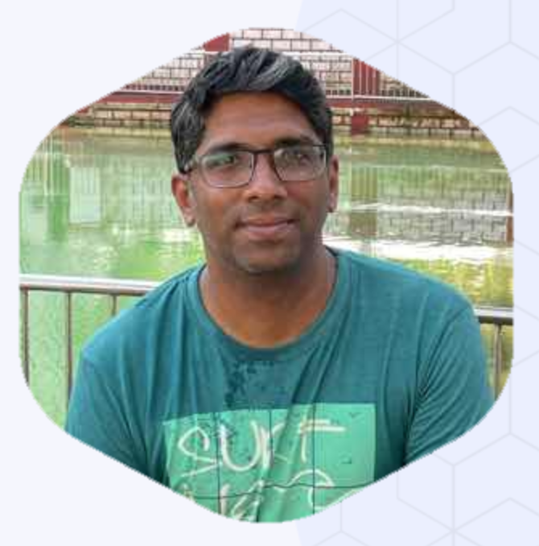

Aswad Rangnekar
Infrastructure Leader | 5G Core SME | Platform Engineering & Hyper-Automation
- +1 647 859 6044
- aswad.r@gmail.com
- Toronto

- Infrastructure Leader with 16+ years of experience architecting high-performance, low-latency environments in Telecommunications and Tier 1 Banking.
- Expert in Platform Engineering and hyper-automation using Go and Python to eliminate operational toil.
- Strategic designer of cloud-native systems (EKS, Kubernetes) and mission-critical 5G Core network functions.
- Open-source contributor to OpenStack with a focus on security patches and core feature enhancements.
- Proven track record of building and mentoring elite engineering teams from scratch in start-up environments.
Work Experiences
AWS Infrastructure Lead / SME
Infrastructure Prime for 5G Core production operations, managing mission-critical AWS EKS and OpenStack clusters with zero-downtime mandates.
- Architected a custom Go-based high-concurrency backup utility, reducing transfer windows from 7 hours to 15 minutes (96% efficiency).
- Prototyped a RAG-based AI Technical Assistant to streamline technical query resolution for the engineering team.
- Implemented automated "resource-reaper" scripts for continuous cost optimization and dynamic resource lifecycle management.
- Coordinate with multi-vendor stakeholders (AWS, Nokia, Dell) on hardware readiness and infrastructure hardening.
Lead Site Reliability Engineer
Led a specialized Innovation team focused on pan-organizational SRE adoption and hyper-automation of operational toil.
- Designed and delivered an enterprise-scale auto-remediation framework integrated with ServiceNow and JIRA.
- Standardized "Golden Signal" monitoring across the bank, providing high-fidelity visibility into mission-critical service health.
- Automated the end-to-end onboarding workflow for stakeholders to the enterprise SRE dashboard.
- Spearheaded automation of L1/L2 operational runbooks, significantly reducing Mean Time to Repair (MTTR).
Technical Lead & Project Architect
Founding-era leader responsible for scaling the engineering team and architecting flagship cloud migration and infrastructure products.
- Partnered with the CEO to scale the India-based engineering team, leading all hiring and technical mentorship.
- Architected VPC+ migration tools for automated VM transitions from VMware ESXi to AWS and GCP.
- Provided Tier 3 engineering support for global OpenStack pods, remediating complex networking (Neutron) and compute bugs.
- Developed high-performance ETL microservices in Go for the Cisco Multicloud Management Platform (MCMP).
Senior Software Engineer (R&D)
Award-winning R&D engineer focused on open-source cloud infrastructure and proactive monitoring solutions.
- Independently developed an award-winning monitoring suite for OpenStack core components (Nova, Swift, Glance).
- Represented NTT Data in the OpenStack community, contributing security patches and feature enhancements to upstream projects.